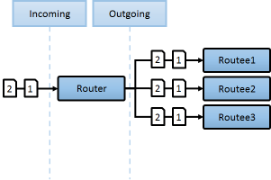

Introduction to Akka
@pchmiele
What is Akka?
- Open Source
- Written in Scala
- Java/Scala Api available
- Akka.NET - .NET port of akka offering F#/C# API
- Inspired by Erlangs actor model
- Modular structure
- Toolset (not framework)
What akka offers?
- 50 milion msg/sec on a single machine
- ~2.5 milion actors per GB of heap
- Adaptive cluster management, load balancing, routing, paritioning and sharding
- Self-heal system
- Asynchronus and distributed design
- Let it crash model
Who is using Akka?
Akka ekosystem
 |
 |
 |
|
 |
 |
 |
Actor model
- Encapsulates state and behaviour
- Lightweight
- Single-threaded
- No shared state
- Messages kept in mailbox
- Messages processed in order
- Explicit lifecycle
Actors hierarchy

Actor system
- Heavier
- Only consumer of configuration
- Manages resources in order to run actors
Mailboxes
- Many implementations
- FIFO by default
- No scanning mailbox available
- When actor stopped then his mailbox is replaced by system mailbox redirecting all new messages to event stream as deadletters
Demo 1 - Simple Actor
Demo 2 - Communication between actors
Actor references and paths

Actor lifecycle

Supervision
- All actors are able to supervise their children
- Each actor can have only one supervisor
- 2 Supervision Strategies
- AllForOneStrategy - restart all children
- OneForOneStrategy - restart only one child
Demo 3 - Supervision and ActorRef
Routers and Groups
- RoundRobinPool/RoundRobinGroup
- RandomPool/RandomGroup
- BalancingPool
- SmallestMailboxPool
- BroadcastPool/BroadcastGroup
- ... and more
|  |  |
Demo 4 - Routers
Demo 5 - Switchable behaviour
Demo 6 - Akka persistence
Demo 7 - Akka monitoring
Use cases
- HA
- Scale-up
- Scale-out
- Fault-tolerance
- Service Backend, Gaming, Concurrency, Transaction Processing, Business Intelligence, Complex Event Stream Processing, and more..
Features
Areas
Akka/Akka.net differences
 |
||
 |
What's next?
- Akka Clustering
- Akka HTTP
- Akka Streams
- Akka Remote
Resources
- Akka
- Akka.NET
- Akka Use Cases
- @pchmiele demo